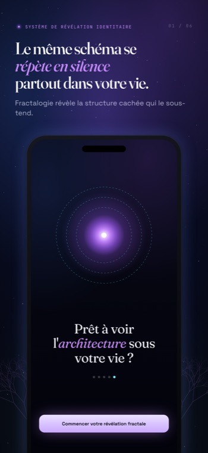

Une idée discrète repose sous tout ce que fait Fractalogie : les situations qui ne cessent de revenir ne sont pas des accidents de circonstance. Elles sont la surface visible d'une structure — et une structure, ça se voit.
La répétition est structurelle, pas aléatoire. Quand la même dispute, la même fuite, le même silence ne cessent d'arriver — à travers des gens différents, des années différentes, des vies différentes — ce n'est pas de la malchance qui s'accumule. C'est un système qui fait exactement ce pour quoi il a été construit.
Un schéma qui se répète aussi fidèlement n'est pas un défaut de la machine. Il est la machine. La scène revient parce que revenir maintient quelque chose intact.
Rien de ce que tu fais deux fois n'est dénué de sens. Chaque schéma préserve la stabilité et minimise l'exposition émotionnelle — il dépense le moins d'énergie possible pour te protéger d'un sentiment que tu préférerais ne pas affronter de face.
C'est pourquoi les schémas sont si difficiles à « simplement arrêter ». Ce ne sont pas des erreurs à corriger. Ce sont d'élégantes solutions à un problème que tu n'as peut-être jamais nommé — des solutions qui fonctionnent, à un prix.

La même structure apparaît dans tes relations, ton argent, ton corps, ton travail, ton sentiment de qui tu es. Éloigne-toi de l'une et tu en trouveras le jumeau ailleurs — la même boucle dans un autre costume.
C'est ça, le fractal : pas plusieurs problèmes distincts, mais une structure unique qui résonne à chaque échelle d'une vie. Résous-la comme cinq problèmes et elle repousse. Vois-la comme une seule forme et elle s'immobilise enfin.
L'identité se comporte comme un attracteur : un centre de gravité qui ramène les événements dans une orbite familière. Quoi que tu aies décidé être, la réalité ne cesse de s'arranger pour le confirmer — parce qu'être cohérent semble plus sûr qu'être libre.
La conscience déstabilise les schémas. Au moment où une boucle est vue clairement — son déclencheur, sa réaction, l'émotion qu'elle garde, le prix qu'elle facture — elle perd une part de son emprise automatique. Tu ne peux plus tout à fait faire tourner le même programme de la même façon après l'avoir regardé tourner.
Mais soyons honnêtes sur la limite : comprendre n'est pas se transformer. La prise de conscience n'est pas un remède. Nommer la structure est le début, pas la fin — c'est ce qui rend le changement possible, pas ce qui le garantit.
Fractalogie ne te motive pas. Il ne moralise pas, ne prescrit pas d'affirmations, et ne te tend pas un plan en cinq étapes. Aucune voix de développement personnel pour te dire de penser positif ou d'essayer plus fort.
Il reflète — précisément, patiemment, un fil à la fois — jusqu'à ce que la structure en dessous te devienne visible. Un miroir ne te dit pas quoi faire de ce que tu vois. Il refuse simplement de détourner le regard le premier.
Tout ce qui précède, distillé dans les principes que l'app suit à chaque scan.
Pas les problèmes qu'elle produit. Les problèmes sont la sortie ; toi, tu es le système.
La scène revient parce que revenir protège quelque chose que tu n'as pas encore nommé.
Il préserve la stabilité et minimise l'exposition — une solution élégante, à un coût.
La même boucle se répète à travers l'amour, l'argent, le corps, le travail et l'identité.
La conscience précise déstabilise la boucle — même si comprendre n'est pas encore se transformer.
Fractalogie est un outil d'introspection. Ce n'est pas une thérapie, ni un traitement médical ou psychologique, ni un avis professionnel d'aucune sorte. Il ne diagnostique, ne traite ni ne guérit rien, et ne remplace pas un professionnel qualifié.
Ce n'est pas non plus un service d'urgence. Si tu traverses une détresse, si tu luttes avec ta santé mentale, ou si tu penses à te faire du mal, ne te repose pas sur une app — tourne-toi tout de suite vers un professionnel qualifié, une personne de confiance, ou les services d'urgence de ta région.
Ce que Fractalogie offre, c'est un miroir clair et calme. Ce que tu choisis de faire de ce qu'il reflète n'appartient qu'à toi.
Nomme une situation qui ne cesse de se répéter, décris-en un seul instant, et regarde surgir la forme en dessous. Ton premier scan est gratuit — aucun compte, aucun pistage.